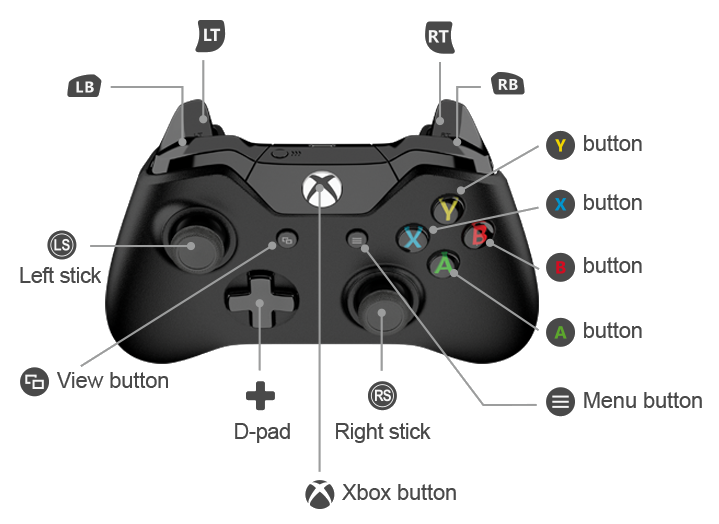

Gamepads
Connecting your Gamepad
The following instructions work for the Mocute 032 and MagicSeeR1 gamepads.
Other devices require similar steps, but the mechanism to change the mode may be different.
Warning
The Mocute 032 gamepads are of questionable quality and durability, and may not last long. We recommend the MagicSeeR1 gamepad instead.
For the Mocute 032 gamepads
On the gamepad, the small button is Start/Power. Press for a couple seconds until LED comes on.
For the MagicSeeR1 gamepads (Mode B)
There is a dedicated on/off switch.
On your Android device go to the settings, then Bluetooth, and make sure Bluetooth is turned ON.
Now press
More Settings. Within a few seconds a new device should appear in theAvailable devicessection. (The name of the device may make it apparent that it is the gamepad, but it may just be a string of hexadecimal numbers.)Select the new device. Many devices will be paired at this point, but if it asks for a pairing code try
0000or1234(check the instructions that came with the gamepad.)After pairing you should see an item in the Notifications regarding the gamepad. Press that item and make sure that “Show virtual keyboard” is ON.
Set the mode of the gamepad:
For the Mocute 032 gamepads (MTK mode)
Turn your gamepad OFF by holding the Start/Power button for about 5 seconds until the LED goes out and stays out.
Move the slide switch on the side to the
GAMEposition (towards the joystick).Hold down the button specified in your gamepad instructions for MTK mode. (Typically this is the Triangle button but can be different on different devices.) While still holding that button down, press the Start/Power button until the LED turns on. Release the buttons as soon as the LED turns on.
This configuration procedure should only be required once. In the future your gamepad should be in MTK mode when you turn it on.
(This not true of the MagicSeeR1 which must be set every time you turn it on)
For the MagicSeeR1 gamepads (Mode B)
Turn the device on by moving the slide switch on the side to the
ONpositionWait for the gamepad to connect to Android device (the LED will stop blinking)
Hold down the Mode button and press the B button.
This configuration procedure which must be done every time you turn it on
We have found that some gamepads work well in iCade mode as well. Feel free to experiment. To use iCade mode, follow the steps above but use the button your instructions specify for iCade (typically “X”).
Running Engine Driver with the Gamepad
Set up the gamepad and connect to the Android device (see above)
Start Engine Driver
Connect to a WiThrottle Server or DCC-EX Server
Select a loco as normal and return to the Throttle Screen.
In the Engine Driver * Select a gamepad type.
In the Gamepad section of Engine Driver's Preferences, select a gamepad corresponding to the gamepad mode you configured on the device (above).For the Mocute 032 gamepads we recommend
Mocute MTKfor MKT mode, (orMocute iCade+DPADfor iCade mode).For the MagicSeeR1 you must use
MagicSeeR1 Android-Game B.
You can optionally change what the gamepad buttons do. (See Gamepad Configuration for details.)
On the Throttle Screen
When you press any of the buttons on the gamepad for the first time, a test screen will appear. Press all four DPad buttons in turn and the Four main buttons to pass the test, and return to the Throttle Screen.
Pressing Skip will complete the test and allow you to use the gamepad, even if it is not functioning correctly. (e.g. The mode is incorrect)
Pressing Reset will reset all the gamepads you have connected, and will force you back to the test screen when attempt to use them again.
By default, The DPAD (joystick) on the gamepad will control throttle up, down and direction.
By default, The four individual Buttons on the gamepad will control functions F0, F1, F2 and STOP for the selected throttle.
If you have engines assigned to more than one Engine Driver throttle, by default a short press of the Start Button will move the gamepad to the next assigned throttle. If you have changed the Preferences for the Start Button Action to
ESTOP, then a short press will set the speed for all your Engine Driver throttles to zero.If the Select Button is present on your gamepad, by default, pressing it will move the gamepad to the next assigned throttle.
Engine Driver's on-screen buttons continue to function as before. Use them to add or drop locos, and to access any additional function buttons.
Multiple gamepads
Engine Driver supports up to 4 gamepads at the same time. All the gamepads must be of the same type.
As you connect each gamepad, you will be forced to go to the gamepad test screen (unleess you have disabled the ‘Enforce gamepad testing?’ preference). The new gamepad will be automatically assigned to the next throttle that does not have a gamepad assigned to it.
An indicator 1, 2 etc. will show near the throttle speed to indicate which throttle each gamepad is controlling. Only one gamepad can be active on a single throttle at one time.
Note
By default Engine Driver assumes you will only use 1 gamepad. Any subsequent gamepads connected to the device/phone will therefore control the same throttle as the first gamepad. To allow for more, to control separate throttles, than you must disable the Only One Gamepad? preference.
Todo
LOW: If you turn the gamepad off…
Example Gamepads
Tested Gamepads
These are the gamepads that we have had the most success with…
Mocute 032
Warning
The Mocute 032 gamepads are of questionable quality and durability, and may not last long. We recommend the MagicSeeR1 gamepad instead.
{kind=link}
They are available from a variety of different sellers on eBay and elsewhere. Their build quality is very poor, which is reflected in the price, so don’t expect a long life from them.
These have been most successful when set to MTK mode (see above). Hovever some newer versions of the device seem to be incapable of changing to MTK mode, so try the ‘game’ mode if you have problems.
MagicSeeR1
{kind=link}
This one has been very successful on Mode B, but you need to re-select ‘mode B’ every time you switch it on. These seem to be a far better quality than the one above, but are more expensive.
Flydigi Wee 2
{kind=link}
This has been successful.
Utopia 360
{kind=link}
This has been successful with the ‘Android C’ mode.
XBOX 360 Controller
{kind=link}

Note: not all the buttons are able to be used.
DIY Arduino ESP32 + keypad + Rotary Encoder
This is a DIY gamepad with a keypad and physical dial.
Note
See https://github.com/flash62au/WiTcontroller for details.
Normal Keyboard
This has been successful. See below for the keystroke meanings when using a keyboard.
Note: In the gamepad test screen, just select ‘Skip’ to use the keyboard.
USB Volume dial
Various USB or Bluetooth volume dials have been found to work successfully as a gamepad for controlling speed.
Volume dials will work without any special configuration because Engine Driver always had the ability to change loco speed with any volume control. But if you select the ‘USB Volume dial’ as a gamepad type, you will have the ability to remap any additional buttons that come with the dial.
Future Support Planned
none currently identified
Not Recommended Gamepads
These work, but have issues which make them not recommended.
VR Box
Support for this type of gamepad was previously removed from Engine Driver as the device was so unreliable. (Mine had a bad solder join that I was able to fix.)
However support for Mode B on this gamepad was later re-added.
With VR Box Mode B it is important to enable the ‘Ignore Joystick Actions’ preference, as the DPad/joystick sends both joystick events and keystroke events, which interfere with each other.
{kind=link}
Unsupported Gamepads
none currently identified
Keyboard Commands
For use when Keyboard is selected as the gamepad type:
Up or Page Up or + or = = Increase Speed
Media Next = Increase Speed * 2
Down or Page Down or - = Decrease Speed
Media Previous = Decrease Speed * 2
Home or X = Stop
Left or [ = Reverse (Forward if buttons swapped in preferences)
Right or ] = Forward (Ahead) (Reverse if buttons swapped in preferences)
D = Direction - Toggle Forward/Reverse
N = Next Throttle
End or Z = Emergency stop
Semi-Realistic Throttle Only:
\ = Neutral
PgUp or ‘ = Decrease Brake
PgDn or ; = Increase Brake
. = Decrease Load
, = Increase Load
F 0 0 - F 3 1 = Function
Must be F followed by two digits
or F11 followed by two F… button equivalents F10 = 0, F1 - F9 = 1-9
e.g. F 0 5 = Function F05, or F11 F10 F5 = Function F05G 0 0 - G 3 1 = Force function to act as a latching function
Must be G followed by two digits0 - 9 = Functions 0-9
Without a preceding F, G, S or L
or F10 - F9 F10 = 0, F1 - F9 = 1-9S 0 0 0 - S 1 0 0 = Speed (in percent)
Must be S followed by three digits
or F12 followed by three F… button equivalents F10 = 0, F1-F9 = 1-9
e.g. S 0 5 6 = Speed 056, or F12 F10 F5 F6 = Speed 056L = Limit Speed
P = Pause Speed
In Phone Loco Sounds (IPLS)
B = Bell
H = Horn / Whistle
Shift + H = Short Horn
M or Volume Mute = Mute IPLS
T 0 - T 5 = Specify a throttle for next command
Must be T followed by one digit
or Esc followed by one F… button equivalents F10 = 0, F1-F9 = 1-9
The immediately following command will sent to the specified throttle regardless of the currently selected gamepad throttle.
e.g. T 5 F 0 1 = Activate function 1 on Throttle 5
Note: The 0 - 9 keys cannot currently be used alone when specifying a throttle. Use the F commands instead.
All other keyCodes are ignored.
Failure to follow the F, G, S or L with the correct number of digits will cause the command to be ignored.
These same keycodes are used by the DIY Arduino controllers.